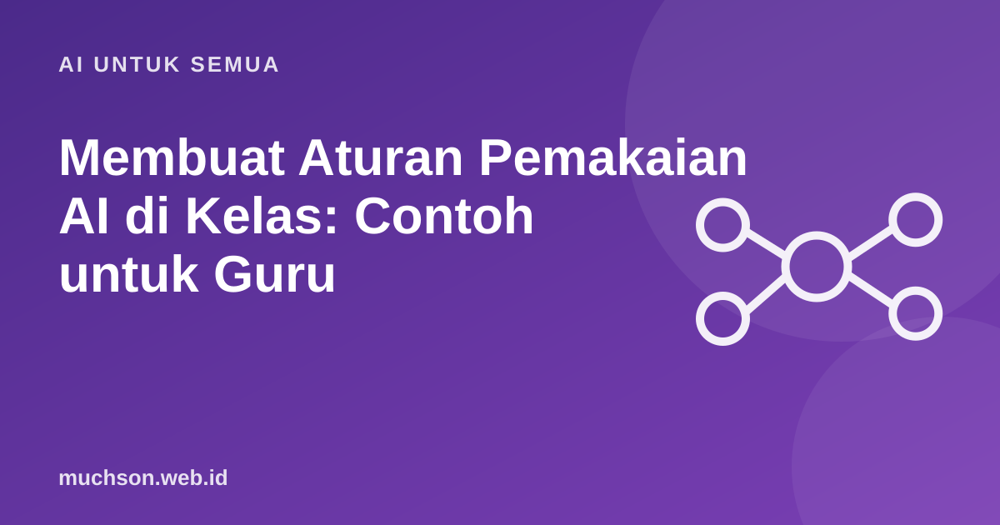

Beranda › Artikel › AI untuk Semua
AI untuk SemuaMembuat Aturan Pemakaian AI di Kelas: Contoh untuk Guru
Melarang AI sepenuhnya sulit ditegakkan, sementara membebaskannya tanpa arahan membuat siswa bingung apa yang boleh. Siswa sebenarnya ingin aturan yang jelas. Kebijakan yang baik tidak harus panjang: cukup jelas untuk setiap tugas, dijelaskan alasannya, dan konsisten ditegakkan.

Mulai dari tujuan belajar, bukan dari alatnya
Pertanyaan kuncinya: keterampilan apa yang ingin dilatih tugas ini? Bila tujuannya menulis argumen sendiri, AI yang menulis draf menghilangkan latihannya. Bila tujuannya menganalisis data, AI yang membantu menulis rumus mungkin tidak masalah.
Skala izin per tugas
| Tingkat | Contoh tugas | Yang boleh |
|---|---|---|
| 1. Tanpa AI | Ujian di kelas, refleksi pribadi | Tidak ada pemakaian AI |
| 2. Ide | Esai argumentatif | Brainstorm dan merancang kerangka; tulisan akhir sendiri |
| 3. Umpan balik | Laporan praktikum | Meminta masukan tata bahasa dan struktur pada draf sendiri |
| 4. Kolaborator | Proyek aplikasi, analisis data | AI membantu kode atau analisis, siswa menjelaskan dan menguji |
| 5. Bebas | Tugas eksplorasi | Semua pemakaian, dengan evaluasi kritis atas hasil AI |
Contoh teks untuk silabus
Kebijakan AI mata kuliah ini
AI generatif (ChatGPT, Gemini, Claude, dll.) boleh dipakai sesuai
tingkat yang tertulis di setiap tugas. Bila tidak tertulis, berlaku
tingkat 3: AI hanya untuk umpan balik atas tulisan Anda sendiri.
Setiap pemakaian AI wajib diungkapkan di akhir tugas:
- alat yang dipakai,
- untuk bagian apa,
- contoh prompt utama,
- apa yang Anda ubah dari hasil AI.
Anda tetap bertanggung jawab atas kebenaran isi. Mengumpulkan hasil AI
sebagai karya sendiri tanpa pengungkapan termasuk pelanggaran
integritas akademik.Mengapa pengungkapan lebih efektif dari deteksi
Pendeteksi teks AI tidak bisa diandalkan sebagai bukti. OpenAI menghentikan pengklasifikasinya sendiri pada 2023 karena akurasi rendah, dan studi Liang dkk. menemukan pendeteksi sering salah menandai tulisan penutur non-asli bahasa Inggris sebagai buatan AI. Menuduh siswa berdasarkan skor pendeteksi berisiko tidak adil.
Bila terjadi pelanggaran
- Kumpulkan bukti dari proses (bukan hanya skor pendeteksi).
- Ajak siswa berbicara dan jelaskan tugasnya.
- Bedakan salah paham aturan dari kecurangan yang disengaja.
- Untuk pelanggaran pertama yang ringan, jadikan kesempatan belajar: kerjakan ulang dengan pengungkapan yang benar.
- Ikuti prosedur institusi untuk kasus serius.
Tanya jawab
Apakah boleh melarang AI sepenuhnya?
Bagaimana bila siswa tidak punya akses AI berbayar?
Apakah guru perlu mengungkapkan pemakaian AI juga?
Sumber dan bacaan lanjut
- UNESCO (2023): Guidance for generative AI in education and research
- Perkins, Furze, Roe, MacVaugh (2024): The AI Assessment Scale
- Liang et al. (2023): GPT detectors are biased against non-native English writers
- AI detector akurat atau tidak (artikel terkait)